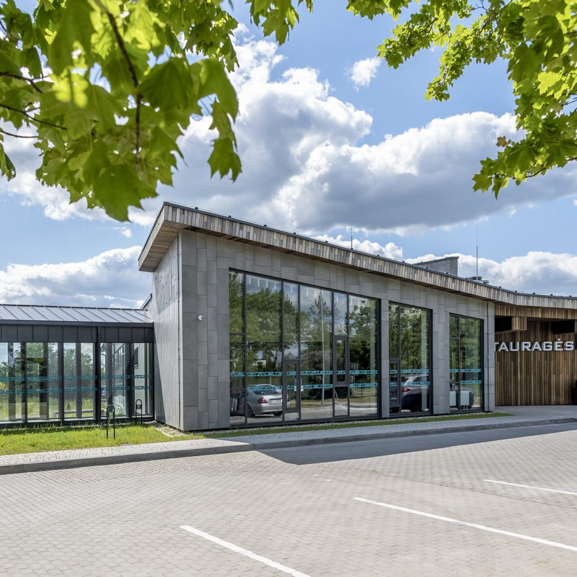
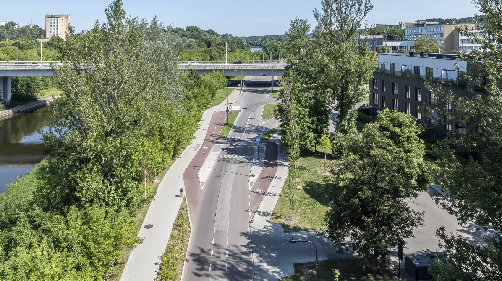

Mes — „Atamis“. Inžinerijos ir architektūros studija Vilniuje, nuo 2006 m. jungianti architektūrą ir inžineriją į vieną tvarią visumą — daugiau nei 200 projektų visoje Lietuvoje kasmet.
Sritys
Šešios veiklos kryptys


Projektai